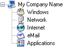

La personnalisation
|
|
La personnalisation (1.x)KeePass 1.x propose diverses fonctionnalités permettant aux administrateurs réseau de personnaliser l'apparence et le comportement du programme. |

- Les préliminaires
- Le mode mini
- Les opérations dangereuses
- Les groupes dans les bases de données nouvellement créées
- Le suffixe du titre de la fenêtre
- L'apparence de la bannière de la boîte de dialogue
- Les exigences du mot de passe maître minimum
- Davantage d'options
 Les préliminaires
Les préliminaires
La plupart des options ci-dessous sont configurées en éditant directement le fichier de configuration KeePass.ini. Si, vous envisagez de déployer une version personnalisée de KeePass, alors vous devez bien comprendre le système de configuration de KeePass, en particulier comment imposer certains paramètres et laisser les autres aux utilisateurs.
Remarquez que KeePass propose un riche cadre de greffons. S'il n'y a pas d'élément dans le fichier INI pour configurer ce à quoi vous pensez, alors vous pourrez peut-être penser à écrire un greffon.
 Le mode mini
Le mode mini
KeePass prend en charge un mode mini. En précisant KeeMiniMode=True dans le fichier KeePass.ini, KeePass fonctionnera dans un mode de fonctionnalité minimal.
Dans ce mode, les fonctionnalités suivantes sont cachées :
- Les options de configuration et d'administration (paramètres de la base de données, les options du programme global, les greffons, etc.).
- La fonctionnalité qui n'intéresse pas les utilisateurs dans une entreprise (comme la vérification des mises à jour, etc.).
- Importer/Exporter.
- La saisie automatique.
- Les fichiers clés (seulement un mot de passe maître peut être saisi).
- Les opérations de fichier (seulement la commande Enregistrer est affichée).
Si la base de données spécifiée n'existe pas, alors KeePass crée et en ouvre une automatiquement. Pour spécifier le chemin de base d'une base de données nouvellement créée, utilisez l'option de configuration KeeAutoNewDbBasePath (ne doit pas se terminer par un '\' final ; KeePass créera l'arborescence de répertoires spécifiée, si elle n'existe pas déjà). Pour spécifier le nom de base du fichier de la base de données, utilisez l'option KeeAutoNewDbBaseName (sans ".kdb").
 Les opérations dangereuses
Les opérations dangereuses
Les opérations critiques pour la sécurité (telles que la modification de la clé principale, l'impression, l'exportation, l'affichage des mots de passe, etc.) peuvent être désactivés en spécifiant KeeDisableUnsafe=True dans le fichier INI.
Certaines opérations peuvent être réactivées en spécifiant explicitement des éléments de configuration. Notez que pour des raisons de sécurité, ces éléments additionnels ne sont chargés qu'à partir des fichiers INI imposés et globaux, pas à partir du fichier INI local de l'utilisateur. Ils remplacent les paramètres des opérations dangereuses et du mode mini. Les éléments booléens suivants sont pris en charge : KeeForceAllowChangeMasterKey, KeeForceAllowPrinting, KeeForceAllowImport, KeeForceAllowExport.
Pour interdire l'impression des mots de passe, spécifier KeeDisallowPrintingPasswords=True.
 Les groupes dans les bases de données nouvellement créées
Les groupes dans les bases de données nouvellement créées
Utilisation des éléments KeeRootInNewDb et KeeGroupInNewDb# dans le fichier INI, vous pouvez spécifier les groupes qui sont automatiquement créés lorsqu'un utilisateur crée un nouveau fichier de base de données.

Exemple : si vous souhaitez que l'arbre initial ressemble à celui de droite, alors votre fichier INI contiendrait les lignes suivantes :
KeeRootInNewDb=@My Company Name@35
KeeGroupInNewDb0=@Windows@38
KeeGroupInNewDb1=@Network@3
KeeGroupInNewDb2=@Internet@1
KeeGroupInNewDb3=@eMail@19
KeeGroupInNewDb4=@Applications@32
Les éléments doivent être numérotés consécutivement dans l'ordre croissant à partir de 0. Le premier caractère de la valeur de l'élément spécifie un caractère séparateur. Dans l'exemple ci-dessus, '@' est utilisé comme séparateur, mais vous pouvez choisir n'importe quel autre caractère (si le nom du groupe contient un '@'). Le nom du groupe suit le caractère séparateur et se termine par le caractère séparateur. Le nombre qui suit est l'ID d'une icône client intégré dans KeePass (voir la boîte de dialogue de sélection d'icônes de KeePass pour une liste d'icônes). Créer des arborescences (c'est-à-dire des sous-groupes des groupes ci-dessus) n'est pas pris en charge.
 Le suffixe du titre de la fenêtre
Le suffixe du titre de la fenêtre
Un suffixe de titre de fenêtre principale peut être spécifié à l'aide d'élément KeeWindowTitleSuffix dans le fichier INI.
 L'apparence de la bannière de la boîte de dialogue
L'apparence de la bannière de la boîte de dialogue
L'apparence des bannières de la boîte de dialogue de KeePass peut être configurée à l'aide des éléments suivants dans le fichier INI :
- KeeBannerColorStart : spécifie la couleur de départ du gradient de l'arrière-plan. Définissez-le sur un triplet d'octet BGR (en décimal).
- KeeBannerColorEnd : spécifie la couleur de fin du gradient de l'arrière-plan. Définissez-le sur un triplet d'octet BGR (en décimal).
- KeeBannerColorText : spécifie la couleur du texte de premier plan. Définissez-le sur un triplet d'octet BGR (en décimal).
- KeeBannerFlip : valeur booléenne qui spécifie s'il faut permuter la direction du gradient naturel (c'est-à-dire de l'horizontale à la verticale ou de la verticale à l'horizontale). La direction naturelle dépend de la version de KeePass que vous utilisez.
 Les exigences du mot de passe maître minimum
Les exigences du mot de passe maître minimum
Vous pouvez spécifier plusieurs propriétés que les mots de passe principaux doivent avoir afin d'être accepté (longueur, qualité estimée, etc.). Voir la spécification des propriétés minimales d'un mot de passe maître.
 Davantage d'options
Davantage d'options
Le nombre de jours en dessous duquel les entrées sont traitées comme arrivant à expiration peut être spécifié à l'aide de l'élément de configuration KeeSoonToExpireDays.
Les emplacements des fichiers de configuration peuvent être remplacés à l'aide des paramètres KeeConfigFileOverrideGlobal et KeeConfigFileOverrideUser (dans le fichier de configuration imposée). Des chemins de fichier complets et absolus doivent être spécifiés, et les deux remplacements ne doivent pas pointer vers le même fichier.
Les remplacements d'expressions régulières peuvent être appliqués aux remarques avant de les afficher dans la liste des entrées principales. Les éléments KeeNotesRegex# dans le fichier de configuration spécifient les expressions régulières et KeeNotesFormat# les remplacements. Par exemple : les paramètres suivants remplacent les caractères de tabulations par des points au milieu :
KeeNotesRegex0=(\t)
KeeNotesFormat0=\xB7